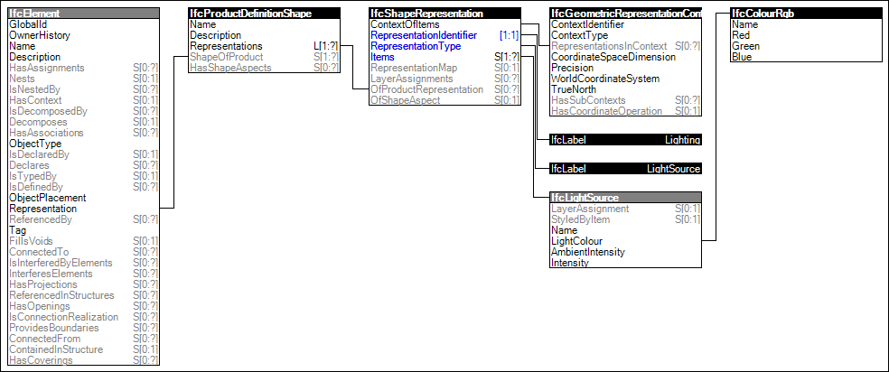

Link to this page
Link to this pageElements emitting light provide a 'Lighting' representation. Examples of such elements include lamps and light fixtures. Such representation may be used for 3D rendering or lighting design.
The representation identifier and type and the only allowed single representation item of the 'Lighting' representation are:
Figure 85 illustrates an instance diagram.
 |
Figure 85 — Lighting Geometry |